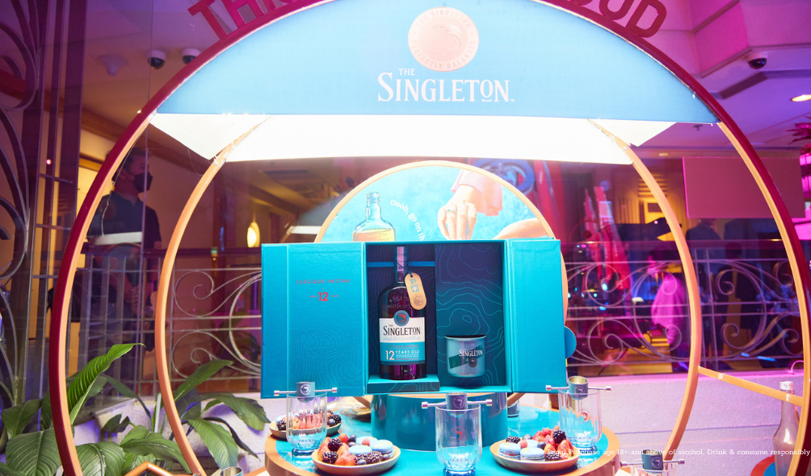

Tối ngày 10/1, tạp chí thời trang Men's Folio Vietnam tổ chức đêm tiệc tôn vinh những cá nhân xuất sắc đã có nhiều bước tiến mạnh mẽ trong lĩnh vực họ đang theo đuổi. Và không gì hoàn hảo hơn khi họ chúc mừng nhau bằng những cái ôm chân tình và chung vui với những ly rượu với sự cân bằng tuyệt hảo, cấu trúc mượt mà và mùi vị dịu êm đến từ The Singleton. Có The Singleton, hẳn mọi trải nghiệm đồng hành cùng Men's Folio trong năm 2022 thật tuyệt, khép lại một năm 2022 đáng nhớ.
Trong không gian sang trọng của đêm trao giải “Male Icon Awards 2022”, thương hiệu rượu whisky thời thượng The Singleton đã mang đến cho các khách mời những trải nghiệm vị giác mới lạ với dòng rượu Singleton 12 năm tuổi Dufftown. Nếu thiếu vắng sự đồng hành tận tâm của The Singleton sẽ là một sự thiếu sót lớn cho buổi gặp gỡ và kết nối giữa các vị khách mời tại đêm tiệc. Bởi tất cả đều ấn tượng với vị rượu của Dufftown, một trong ba nhà máy chưng cất nổi tiếng cùng với Glendullan và Glen Ord, đều cùng chung một tầm nhìn duy nhất – tạo ra các loại mạch nha đơn cất có hương vị tuyệt vời, đặc biệt cân bằng, dễ uống và lôi cuốn ngay từ ngụm đầu tiên. Singleton Dufftown 12 năm tuổi đặc biệt thơm và béo ngậy được ra đời để thay thế Singleton của Auchroisk và tạo thêm phần hứng thú cho những người mới làm quen với hương vị mạch nha đơn cất.
Khu vực quầy bar của The Singleton lấy gam màu xanh biển làm chủ đạo, phù hợp với tinh thần của dòng rượu Dufftown phiên bản 12 năm tuổi. Chúng tôi phải dành một tràng pháo tay cho sự sắp đặt khéo léo của thương hiệu, khi những ly rượu Singleton được xếp đan xen với các loại trái cây nhiệt đới, nhằm gợi lên hương vị êm dịu và đậm mùi trái cây đặc trưng của thương hiệu chuyên sản xuất rượu whiskey đến từ Scotland. Trải nghiệm ẩm thực và không gian xa hoa của khách mời cũng nhờ vậy mà thăng hoa và thi vị hơn.
Tại đêm trao giải “Male Icon Awards 2022”, niềm hạnh phúc nhân đôi khi Gương mặt đại diện cho thương hiệu The Singleton - anh Fabo Nguyễn - nhận được giải thưởng “Influencer of the Year by Singleton” cho sự cố gắng, không ngừng học hỏi và phát triển trong lĩnh vực mà anh theo đuổi. Fabo Nguyễn thể hiện được sự trẻ trung và tinh thần dám nói dám làm của mình đến những người trẻ, bằng những am hiểu sâu rộng về thời trang xa xỉ một cách tinh tế song cũng vô cùng gần gũi, giống với tinh thần mà thương hiệu The Singleton hướng đến những khách hàng của mình. Ngoài ra, Fabo Nguyễn cũng hoạt động mạnh mẽ ở lĩnh vực sáng tạo nội dung trên các nền tảng mạng xã hội; những kiến thức, phong cách sống của anh truyền cảm hứng mạnh mẽ đến cộng đồng người trẻ năng động.
Thưởng thức có trách nhiệm
Không chia sẻ nội dung này cho người dưới độ tuổi hợp pháp uống.